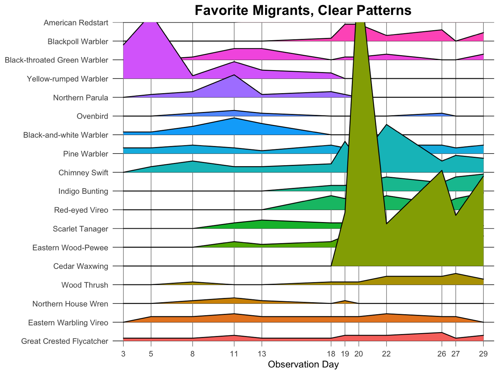
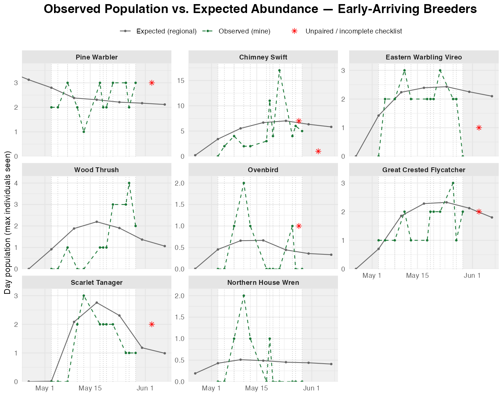

Deep dive
Favorite migrants
A subset of my favorite migrants. Some overlap with the warblers subset.

Sorted by breeding status & arrival timing
Early-arriving breeders
These birds arrive, stop, and stay. They show up early, then hold a roughly flat line across the whole month
Pine Warbler · Chimney Swift · Eastern Warbling Vireo · Wood Thrush · Ovenbird · Great Crested Flycatcher · Scarlet Tanager · Northern House Wren · Common Yellowthroat · Northern Yellow Warbler

NOTE TO SELF: Abundance still seems misleading. I need to make this clearer and explain in more detail why I did it this way, include the formula, and explain why I couldn't just do a double axis.
Claude filling in, TO EDIT: For each species, the expected curve is divided by its own average expected value, then multiplied by that species' own average observed count: rescaled = expected ÷ mean(expected) × mean(observed). That puts it in the same units as my counts, so the two lines share one y-axis per panel — but only the expected line's shape (where it rises and falls) means anything; its height is manufactured to match mine, not an independent estimate.
A double axis wouldn't work here because every panel uses its own y-axis (`scales = "free_y"`, since a species I see 2 of and one I see 30 of can't share a scale). A secondary axis is one shared transform for the whole plot — it can't be refit per panel the way this rescaling is.